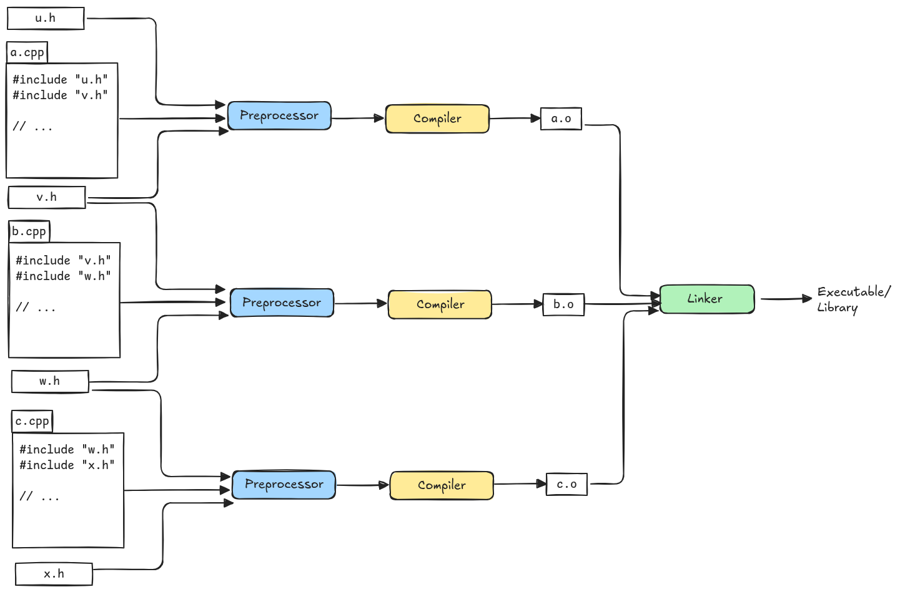

Names and Attributes
In C++, a declared name can have associated attributes:
- Type
- Scope
- Storage duration
- Linkage
Source files and header files
Each C++ application or library consists of one or more source files. The C++ compiler translates .cpp source files to object files *.o, one source file at a time.

The translation unit(TU) is the basic unit of compilation in C++. It is a single implementation file (*.cpp) together with the contents of all it’s header files.
Storage Duration
The storage duration of an object defines the lifetime of the storage containing the object.
In C++, the storage duration of the object can be:
- Static
- Thread
- Automatic
- Dynamic
For an object with static storage duration: - The storage is allocated at program startup. - The storage persists until the program is terminated.
For an object with thread storage duration: - The storage is allocated when the thread begins. - THe storage persists until the thread terminates.
For an object with automatic storage duration: - The storage is allocated when the enclosing block begins executing. This is usually upon entering the enclosing function. - The storage persists until the block terminates. This is usally upon function return.
For an object with dynamic storage duration: - The storage is allocated on the heap by a call to a memory allocation function e.g. std::malloc, operator new or the new expression. - The storage on the heap is deallocated by std::free, operator delete or the delete expression.
Linkage
The linkage of a name is the extent to which that name might refer to a name declared elsewhere. C++ provides for three categories of linkage:
- external linkage
- internal linkage
- no linkage
External linkage
A given name declared with external linkage denotes the same entity across all translation units in a program.
In the below example, total in each translation unit has external linkage:
//file1.cpp
extern int total = 0; // definition
//file2.cpp
extern int total; // declaration for the same objecttotal is defined in file1.cpp. It has extern on it, which means external linkage. It is a definition, it does have an initial value 0. In the second implementation file file2.cpp, it does not have an initializer, so its just a declaration. Those two things refer to the same variable. After separate compiling both file1.cpp and file2.cpp into file1.o and file2.o and linking them together, there’s going to be only one total in this executable.
Internal linkage
A given name declared with internal linkage denotes the same entity within a single translation unit.
A variable with internal linkage can be declared multiple times within a single translation unit and they all wind up referring to the same thing. But, nobody outside the translation unit can refer to those things with internal linkage.
// file1.cpp
static int total = 0; // definition of total
// with internal linkage
// file2.cpp
extern int total; // declaration for
// a different objectIn file2.cpp you have a declaration of total with external linkage and that says, *“Hey, I don’t have any storage, I need it from somewhere else!”. But, it can’t get it from file1.cpp. file1.cpp does not have external linkage. If you try to build this program, because that’s an unsatisfied reference file2.cpp, you’d probably get a link error. At link time, it would say, I don’t see a definition for total to satisfy.
So, what we need is a third one - file3.cpp. The previous example needs the total in file3.cpp to link:
// file1.cpp
static int total = 0; // a definition for total
// with internal linkage
// file2.cpp
extern int total; // a declaration that refers to
// the total in file3.cpp
// file3.cpp
int total; // a definition for the object
// referenced in file2.cppThe total in file2.cpp refers to the object in file3.cpp. To summarize, there are two total objects in all - one internal to file1.cpp and one that’s shared by file2 and file3 via external linkage.
No linkage
Local variables have no linkage. Suppose you have two functions f() and g(). Each have a local variable named total. Think about it. Is there any way, you can write a declaration for total anywhere else in the program that will at link time become a reference to one of those totals?
int f(int i){
int total; // a definition
}
int g(int i){
int total; // a definition for a different object
}No, you can’t do that. Those totals have automatic storage. They are not statically allocated. Because they don’t have a fixed location, there’s no way the linker can can link them. The only things that can have linkage, are things that have a fixed location - functions and objects with static storage.
A conceptual model
In a release build, the linker sees names only if they have external linkage. Names that have internal linkage or no linkage are useful for symbolic debugging, but the linker does not use them when it is combining *.o object files together to produce an executable.
Names defined with external linkage in a translation unit become definitions in the compiled object module.
Names declared with external linkage but not defined in a translation unit become refs in the compiled object module. But, only if they are used in that translation unit.
In a release build, the compiler discards names declared with internal or no linkage at the end of compilation.
Storage class specifiers and functions
By default functions at namespace scope have external linkage.
Adding the keyword extern to a function declaration at file or namespace(global) scope has no effect:
Class members in C++ have external linkage by default.
You commonly place class definitions in header files. And you include those all over the place and create objects that type and call member functions on them and at nowhere did you say that these things were extern. You just implicitly treat them as if they are. They have extern linkage by default.
class Widget{
public:
int f(int); // f has external linkage
// extern int g(int); // error: can't use extern here
};Adding an extern to a declaration at class scope is an error. Class member functions can never have anything but external linkage by default.
Declaring a free-standing function static at file or namespace scope affects its linkage.
This is not so for C++ class member functions.
Declaring a C++ class member function static does not affect its linkage.
It eliminates the function’s implicitly declared this parameter.
Storage class specifiers and objects
Objects at file or namespace scope always have static storage:
// linkage= storage=
static int j; // internal static
extern int j; // external static
int k; // external static
namespace demo{
static int j; // internal static
extern int j; // external static
int k; // external static
};In this case, the storage-class specifier only affects the linkage.
Objects at local scope can have almost any storage duration or linkage:
int main()
{
// linkage= storage=
extern int i; // ? static
static int j; // No static
int m; // No automatic
}For a name declared as extern at the file, namespace or local scope:
- The name has internal linkage if previously declared with internal linkage in a visible declaration.
- Otherwise, it has external linkage.
References
- Back to Basics: Compiling and Linking by Ben Saks, CppCon 2021